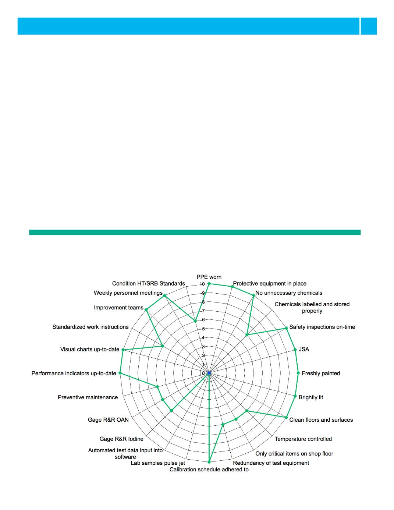

9
Birla Carbon Connect
Europe & Africa Initiatives
Council Audits allow us to better understand the
operations of individual laboratories. We also
perform a product audit by following the history of
the product backwards in time to confirm standard
work procedures are followed and how they can
be improved.
2. LEAN Laboratories
Part of the QC audit is the LEAN laboratory eval-
uation. Each laboratory is assessed in seven cat-
egories: safety, cleanliness, order, standard work,
equipment management, visual management and
continuous improvement. We want our analysts
to work in a clean workspace, as their work will
be of higher quality. When visiting our laboratories,
our customers have only one way of judging the
quality of our test results. They will form an opinion
through the way the laboratory looks. Is it clean
and well ordered, or is it dirty and cluttered?
The result of the LEAN laboratory audit is displayed
in a so-called Radar chart (see graph below).
3. Measurement System Analysis
How do we evaluate that each laboratory test
fulfils the statistical requirements for precision and
accuracy? In Six Sigma this tool, which is also an
ISO/TS 16949 requirement, is called measurement
system analysis, or MSA. For each carbon black
test, we have started to perform an MSA to assess
the quality of our testing. This program evaluates
the equipment as well as the procedure and the
proficiency of the lab personnel.
LEAN Laboratory Audit
Radar Chart